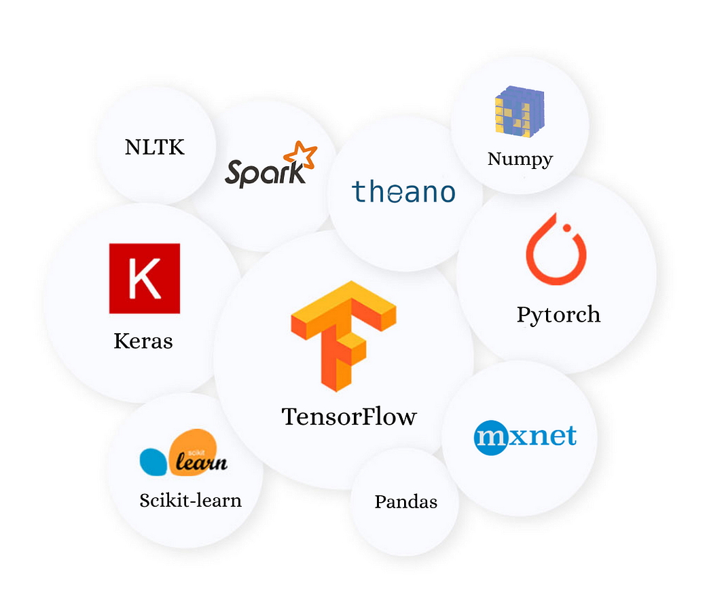

-
August 2024 - Present
Data Science Intern
WerfenBedford, Massachusetts
Applied statistical curve fitting techniques to digitize the instrument time series data to aid new feature development
Formulated a robust assay flagging strategy to handle the reported false positives thereby reducing it by 96%
Delivered customized datasets, extracted new features and optimized the existing pipeline through complex SQL queries leading to 62.85% faster runtimeAugust 2024 - Present
Data Science Intern
-
May 2024 - August 2024
Data Science Intern
OSF HealthcarePeoria, USA
Implemented LSTM and CNN time series forecasting models on ECG signals to predict short-term cardiac abnormalities
Derived temporal, morphological and frequency domain features resulting in 95% average precision and 96% recall
Designed insightful dashboards and assessed operational KPIs to support the mergers & acquisitions team in due diligence and market strategy analysis
Employed A/B testing and control group analysis to identify areas of synergy, operational strategies and potential risks
-
September 2021 - July 2023
Data Scientist
Comviva TechnologiesBengaluru, India
Led the design, development, containerization, and AWS SaaSification of a python-based product Mobilytix AIx which is an automated AI/ML toolkit .
Expanded Mobilytix AIx by incorporating REST API, model performance visualization tools and deep learning modules
Supervised interns to meticulously extract, transform and load data by using Apache NiFi and SparkDecember 2022 - July 2023
Senior Data Scientist
-
September 2021 - November 2022
Data Scientist
Comviva Technologies
Bengaluru, India
Streamlined the cleaning and processing of large datasets to construct demand forecasting machine learning models, yielding an 8% to 10% reduction in customer churn
Optimized interactive Power BI dashboards through query folding and data modeling for presenting performance metrics -
July 2021 - September 2021
Engineer Intern
Compsoft Technologies
Bengaluru, India
Performed market analytics and sentiment analysis on social media comments using NBSVM, achieving 84% accuracy
Augmented accuracy to 86.7% through NLP enhancements such as text cleaning, stemming, and tf-idf techniquesJuly 2021 - September 2021
Machine Learning Intern
-
May 2021 - July 2021
Engineer Intern
Haribon Aeronautics
Bengaluru, India
Implemented an Automated Fish Counter and Tracker using IR sensors and Image Recognition for a State Government project by Karnataka Fisheries Department
Integrated PCB, Arduino and IR sensors based hardware with Python for methodology I
Achieved an accuracy of 91.4% through methodology II based on computer vision by employing YOLO and Masked RCNN with image segmentation; adopted data augmentation and applied dropout regularization to avoid overfitting
about me
Hello, I'm Sahana Girish, a graduate student pursuing Master of Science in
Information Management (MSIM) at the University of Illinois Urbana-Champaign.
Specializing in Data Science and Machine Learning, I am deeply interested in the processes of data analysis, management, and visualization.
I’m passionate about bridging raw data with the valuable insights it holds.
I enjoy analyzing data to uncover its meaning and transforming it into something that powers better decision-making.
Beyond my professional life rooted in data, I am passionate about engaging in the performing arts—dance and theatre—while also expressing my creativity through poetry, choreography, and sketching.
I also love being amidst nature; in an ironic twist, the more challenging the hike, the more solace I find.
Experiences beyond academics are essential for growth, broadening perspectives and fostering adaptability, while fueling my ongoing drive to learn and evolve!
education
2023-2025
Master of Science
Information Management
University of Illinois Urbana-Champaign
Illinois, USA
2017-2021
bachelor of Technology
Electronics and Communication Engineering
Visvesvaraya Technological University
Bengaluru, India
Area of Expertise
TECH STACK
Data Science and Machine Learning Software Development


Cloud and Databases Data Visualisation and Management